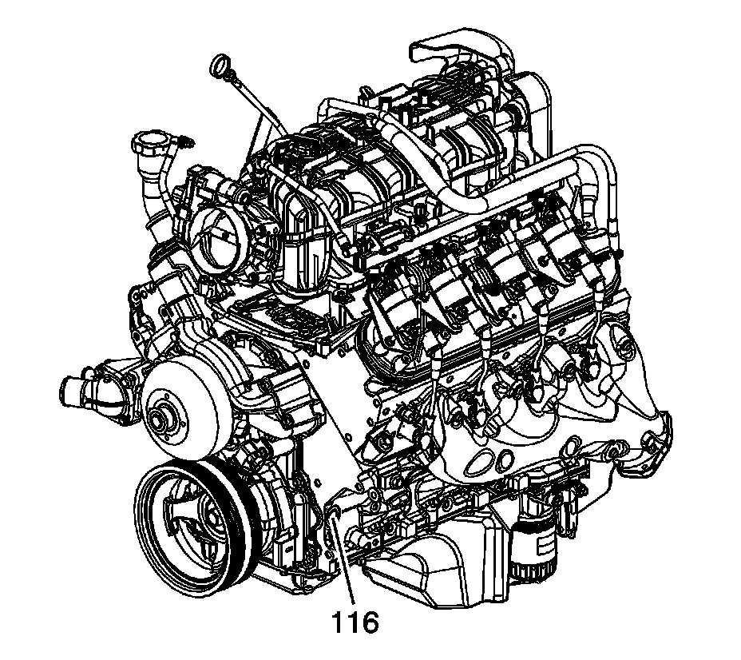
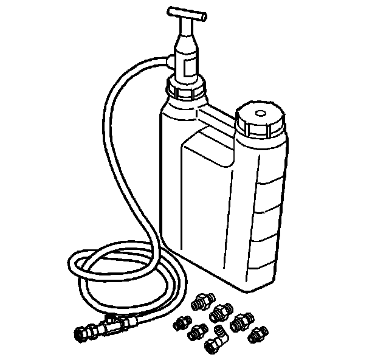

100. Engine Prelubing
Engine Prelubing
Tools Required
J 45299 Engine Preluber

Important: A constant and continuous flow of clean engine oil is required in order to properly prime the engine. Use an approved engine oil as specified in the owners manual.
1. Remove the engine oil filter and fill with clean engine oil.
Notice: Refer to Fastener Notice.
2. Install the oil filter.
Tighten the oil filter to 30 N.m (22 lb ft).
3. Locate the engine block left front oil gallery plug (116).
4. Install the M16 x 1.5 adapter P/N 509375.

5. Install the flexible hose to the adapter and open the valve.
6. Pump the handle on the J 45299 in order to flow a minimum of 1-1.9 liters (1-2 quarts) engine oil. Observe the flow of engine oil through the flexible hose and into the engine assembly.
7. Close the valve and remove the flexible hose and adapter from the engine.
8. Install the gallery plug to the engine.
Tighten the oil gallery plug to 60 N.m (44 lb ft).
9. Top-off the engine oil to the proper level.